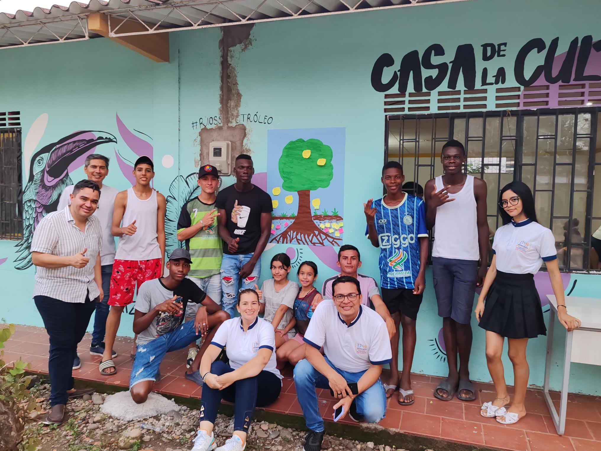

Misión
Promover la organización comunitaria con enfoque cultural y territorial, fortaleciendo capacidades de liderazgo, participación y gestión social para la defensa de la identidad afrodescendiente.

La Asociación ATACAF trabaja desde el territorio para promover procesos de organización comunitaria, participación ciudadana y fortalecimiento cultural afrodescendiente. Su trayectoria integra acciones de liderazgo social, encuentros culturales, pedagogías comunitarias y acompañamiento a iniciativas locales que consolidan el tejido social y la memoria colectiva.
Promover la organización comunitaria con enfoque cultural y territorial, fortaleciendo capacidades de liderazgo, participación y gestión social para la defensa de la identidad afrodescendiente.
Ser una organización referente en procesos comunitarios afrodescendientes, reconocida por su impacto en inclusión social, memoria cultural y desarrollo humano sostenible en la región.
ATACAF aporta conexión directa con la comunidad: dinamiza la participación en la plataforma, valida contenidos desde el territorio, fortalece la agenda cultural y activa espacios de formación, memoria e identidad para niñas, jóvenes y personas mayores.

